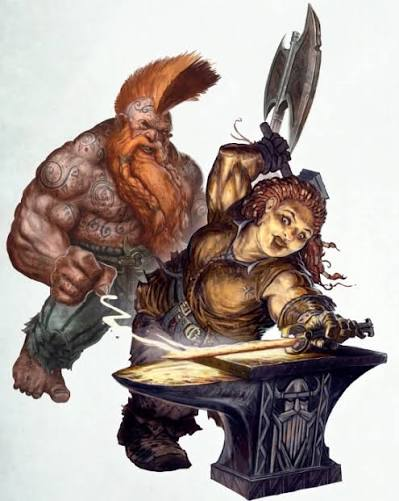

DAWI LORE

THE ANCIENT DAWI
Known as Dwarfs, the Dawi are a proud, ancient race with a rich history and culture that built a vast empire withtin the domains of the World's Edge Mountains known as Karaz Ankor
Descended from the Ancestor Gods, the Dawi are master craftsmen, smiths, and miners. They pride themselves on their loyalty to their loyalty to their clan and those they are indebted to.